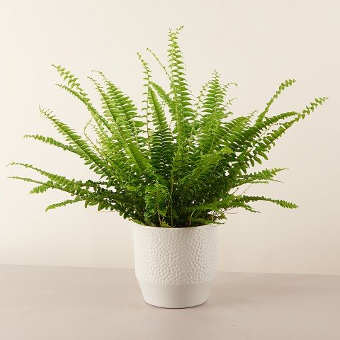

Curly Lady
It is not necessary to have flowers to be a plant that radiates beauty. The Boston fern is made up of only small, elongated curly leaves. It is precisely their leafiness that adds a touch of color to their surroundings. It is perfect for indoors, as long as there is some humidity. Ideal for… Decorating interior spaces.